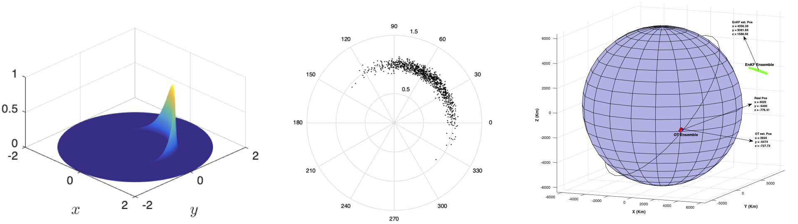
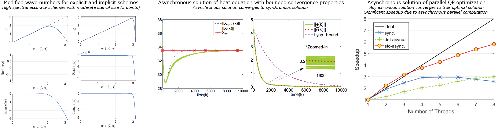
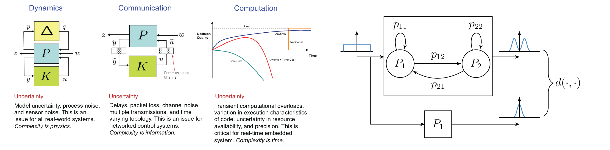
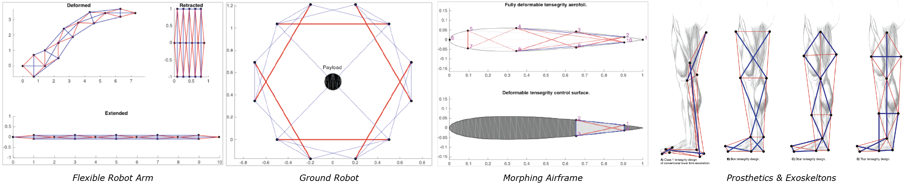
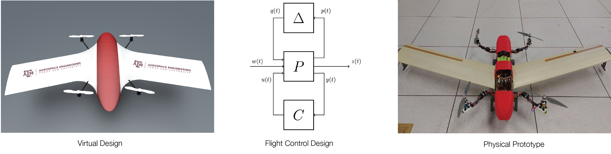
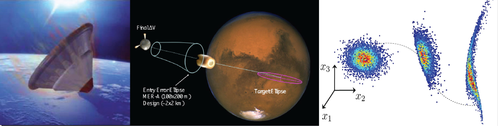

Welcome to the Intelligent Systems Research Laboratory at Texas A&M University. We focus on developing advanced algorithms and analytical methods to design next-generation autonomous systems operating in uncertain dynamic environments. We achieve these goals using theoretical tools from stochastic dynamical systems, robust control, nonlinear estimation, and convex optimization. Our recent work is summarized below.
Privacy Aware Sparse Architectures for Control and Estimation
We are interested in determining sparse architectures for control and estimation for large-scale dynamical systems in this work. The emphasis is on understanding the tradeoff between utility and privacy in these problems. The utility is defined as accuracy or performance that is below a user-defined bound. Whereas privacy is defined as accuracy or performance that is above a user-defined bound. These problems are considered in the Kalman filtering framework, including ensemble and unscented variants, and \(\mathcal{H}_2\) and \(\mathcal{H}_\infty\) framework. Funding Source: NSF and AFOSR.
Selected Papers
- N. Das, R. Bhattacharya Privacy and Utility Aware Data Sharing for Space Situational Awareness from Ensemble and Unscented Kalman Filtering Perspective, IEEE Transactions in Aerospace and Electronic Systems, 2020.
- V. Deshpande, R. Bhattacharya, Sparse Sensing and Optimal Precision: An Integrated Framework for \(\mathcal{H}_2/\mathcal{H}_\infty\) Optimal Observer Design with Bounded Errors, IEEE Control System Letters, 2020.
- N. Das, R. Bhattacharya, Utility and Privacy in Object Tracking from Video Stream using Kalman Filter, Fusion, 2020.
- N. Das, R. Bhattacharya, Optimal Sensing Precision in Ensemble and Unscented Kalman Filtering, IFAC World Congress, 2020.
Information Fusion on Manifolds
Space situational awareness is concerned with tracking space objects and classifying them with respect to specific characteristics. In this research, we are developing novel algorithms for uncertainty propagation and state estimation. Challenges include non-Gaussian uncertainty supported on cylindrical coordinate systems \(\mathbb{R}^5\times\mathbb{S}\), sparse sensing, and unknown sensor characteristics. These algorithms are used for conjunction analysis, which predicts upcoming object encounters to notify satellite operators and avoid high-risk encounters. Funding Source: NSF and Intelligent Fusion Technology.

Selected Papers
- N. Das, V. Deshpande, R. Bhattacharya, Optimal Transport based Tracking of Space Objects using Range Data from a Single Ranging Station, AIAA JGCD, 2019.
- N. Das, R. Bhattacharya, Sparse Sensing Architecture for Kalman Filtering with Guaranteed Error Bound, 1st IAA Conference on Space Situational Awareness (ICSSA), Orlando, FL, USA, 2017.
- N. Das, R. P. Ghosh, N. Guha, R. Bhattacharya, B. K. Mallick, Optimal Transport Based Tracking of Space Objects in Cylindrical Manifolds, The Journal of Astronautical Sciences, 2019.
Asynchronous Numerical Algorithms
Future exascale machines are expected to have \(10^5-10^6\) processors, providing a deep hierarchy of systems and resources. However, many challenges exist, which must be overcome before exascale systems can be utilized as a useful tool to further understanding critical scientific inquires. Among the main obstacles to scaling code to exascale levels is the communication necessary in tightly coupled problems, such as in uncertainty propagation, turbulence flow simulations at high Reynolds numbers, and large-scale convex optimization. The synchronization across processors can cause 50-80% processor idle time. Our research focuses on asynchronous numerical algorithms that do not wait for data to be synchronized. Communication between processors is modeled as a stochastic channel, and the behavior of the numerical algorithm is analyzed in a stochastic jump dynamical system framework. Funding Source: NSF.

Selected Papers
- K. Kumari, R. Bhattacharya, D. Donzis, A Unified Approach for Deriving Optimal Finite Differences, Journal of Computational Physics, 2019.
- K. Lee, R. Bhattacharya, J. Dass, V. Sakuru, and R. Mahapatra, A Relaxed Synchronization Approach for Solving Parallel Quadratic Programming Problems with Guaranteed Convergence, IPDPS, Chicago,2016.
- K. Lee and R. Bhattacharya, On the Relaxed Synchronization for Massively Parallel Numerical Algorithms, American Control Conference, 2016.
- K. Lee, R. Bhattacharya, and V. Gupta, A Switched Dynamical System Framework for Analysis of Massively Parallel Asynchronous Numerical Algorithms, ACC, 2015.
Uncertainty Management in Cyber Physical Systems
Cyber-physical systems have strong coupling between physics, communication, and computation. In our research, we develop algorithms for quantifying uncertainty in system behavior due to uncertainties in the physics (unmodeled dynamics, process and sensor noise), communication (irregular channels, packet loss, etc.), computation (jitter in real-time tasks, CPU transients, etc.). The system-level behavior is modeled as a stochastic jump system, and new uncertainty propagation algorithms for such jump systems are developed. New stochastic scheduling algorithms have been developed that switch between computational tasks to ensure system-level robustness. Funding Source: NSF,

Selected Papers
- K. Lee, R. Bhattacharya, Design of Resource-Optimal Switching for Resource-Constrained Dynamical Systems, International Journal of Control, Automation, and Systems, 2018.
- K. Lee, R. Bhattacharya, Stability Analysis of Large-Scale Distributed Networked Control Systems with Random Communication Delays: A Switched System Approach, System & Control Letters, 2015.
- K. Lee, A. Halder, R. Bhattacharya, Probabilistic Robustness Analysis of Stochastic Jump Linear Systems, ACC, 2014.
- P. Dutta, A. Halder, R. Bhattacharya, Uncertainty Quantification for Stochastic Nonlinear Systems using Perron-Frobenius Operator and Karhunen-Loeve Expansion, IEEE Multi-Conference on Systems and Control, Dubrovnik, Oct 2012.
- R. Bhattacharya, G. J. Balas, Control in Computationally Constrained Environments, IEEE Control Systems Technology, Volume 17, Issue 3, 2009.
- R. Bhattacharya, G. J. Balas, Anytime Control Algorithm: Model Reduction Approach, Journal of Guidance, Control, and Dynamics, 2004, Vol. 27, No.5, pp. 767-776, 2004.
Modeling & Control of Tensegrity Systems
A tensegrity system is an arrangement of axially-loaded elements (no element bends, even though the overall structure bends) that we loosely characterize as a network of bars and cables. The bars take the compressive axial load, and the cables take the tensile load. Tensegrity structures can be designed to be extremely light for a given stiffness. In our research, we focus on efficient multi-body modeling and nonlinear control of tensegrity systems. Applications considered include dexterous robotics, all-terrain ground robots, and biological systems. Funding Source: NSF and NASA.

Selected Papers
- S. C. Hsu, V. Tadiparthi, R. Bhattacharya, A Lagrangian Method for Constrained Dynamics in Tensegrity Systems with Compressible Bars, Journal of Computational Mechanics, 2020.
- V. Tadiparthi, S. C. Hsu, R. Bhattacharya, Software for Tensegrity Dynamics, The Journal of Open Source Software, 2019.
Flight Control Applications
Our lab has expertise in designing custom aerial platforms for various needs. Our research integrates aerodynamics, structural design, and flight control design in a single unified framework. The objective is to develop next-generation tools for rapid custom design of high confidence unmanned air vehicles for various industries, including defense, oil & gas, and precision agriculture. The vision is to codesign much of the system engineering aspect by integrating state-of-the-art in computational fluid dynamics, structural mechanics, robust control theory, CAD software, and 3D printing. The application focus is currently on aerospace systems but can be extended to general autonomous systems.

Selected Papers
- S. C. Hsu, R. Bhattacharya, Design of Stochastic Collocation Based Linear Parameter Varying Quadratic Regulator, American Control Conference, 2017.
- A. Halder, K. Lee, and R. Bhattacharya, Optimal Transport Approach for Probabilistic Robustness Analysis of F-16 Controllers, AIAA Journal of Guidance, Control, and Dynamics, 2015.
- R. Bhattacharya, S. Mijanovic, E. Scholte, A. Ferrari, M. Huzmezan, M. Lelic, M. Atalla, Rigorous Design of Real-Time Embedded Control Systems, IEEE Advanced Process Control Applications for Industry, Vancouver, May, 2006.
- R. Bhattacharya, G. J. Balas, Implementation of Online Control Customization within the Open Control Platform, Software-Enabled Control: Information Technologies for Dynamical Systems, A John Wiley/IEEE Press Publication, 2003.
- R. Bhattacharya, G. J. Balas, M. Alpay Kaya, A. Packard, Nonlinear Receding Horizon Control of an F-16 Aircraft, Journal of Guidance, Control, and Dynamics, Vol. 25, No. 5, pp. 924-931, 2002.
Uncertainty Quantification in Hypersonic Flight
Hypersonic flight leading to entry descent landing of a large spacecraft on the surface of Mars has been identified as a research area by NASA. The requirement is to land within a few kilometers of the robotic test sites. One of the significant concerns of high mass entry is the mismatch between entry conditions and deceleration capabilities provided by supersonic parachute technologies. In such applications, there are uncertainties present in initial conditions and other system parameters. Estimating these systems’ parameters is a challenging problem because of the nonlinearities in the system and the lack of frequent measurements. The evolution of uncertainty (as shown in the figure) is non-Gaussian. In our work, we develop new algorithms for UQ, state-estimation, and guidance algorithms. The controlled descent ensures robustness with respect to system uncertainties and guarantees landing at the desired site with high accuracy. Funding Source: NASA.

Selected Papers
- A. Halder, R. Bhattacharya, Dispersion Analysis in Hypersonic Flight During Planetary Entry Using Stochastic Liouville Equation, AIAA Journal of Guidance, Control, and Dynamics,2011, 0731-5090 vol.34 no.2 (459-474).
- P. Dutta & R. Bhattacharya, Nonlinear Estimation of Hypersonic State Trajectories in Bayesian Framework with Polynomial Chaos, Journal of Guidance, Control, and Dynamics, vol.33 no.6 (1765-1778), 2011.
- P. Dutta & R. Bhattacharya, Hypersonic State Estimation Using Frobenius-Perron Operator, AIAA Journal of Guidance, Control, and Dynamics, Volume 34, Number 2, 2011.
- J. Fisher, R. Bhattacharya, Linear Quadratic Regulation of Systems with Stochastic Parameter Uncertainties, Automatica, 2009.